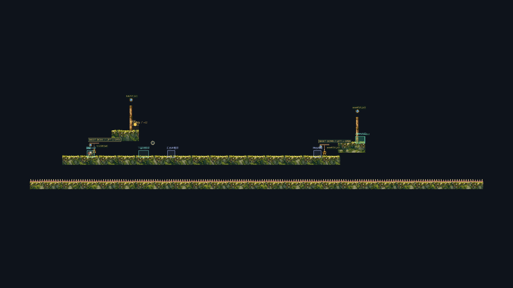

复用三端口场所 → 发现100wu上升需求缺口 → 有界反馈与生成 → 真实Godot验证 → 候选入库 → 具体整图验证。人工趣味与生产准入仍未批准。
打开真实Godot试玩 · 下载33秒路线合集 · 完整报告与限制
M01 主路 · M02 取奖后汇合 · M03 取奖后回访入口

三条连续策略×四种初始锯轮相位12/12；新Module独立留出24/25，满足既有regular技术门槛，失败保留。无中途搬角色、补资源或重建机关；奖励由原交易服务实际发放。
这是单一小型motif的技术闭环：两组件之间的安全连接段偏长，尚不能代表完整R2区域网或《空洞骑士》级探索质量。
录像为程序提交真实Router输入，正常1倍/60fps；完整尝试后冻结1秒。角色物理基线12f6cb0；最新游戏26e7f2a4仅作输入审计，未签正式Demo接入。